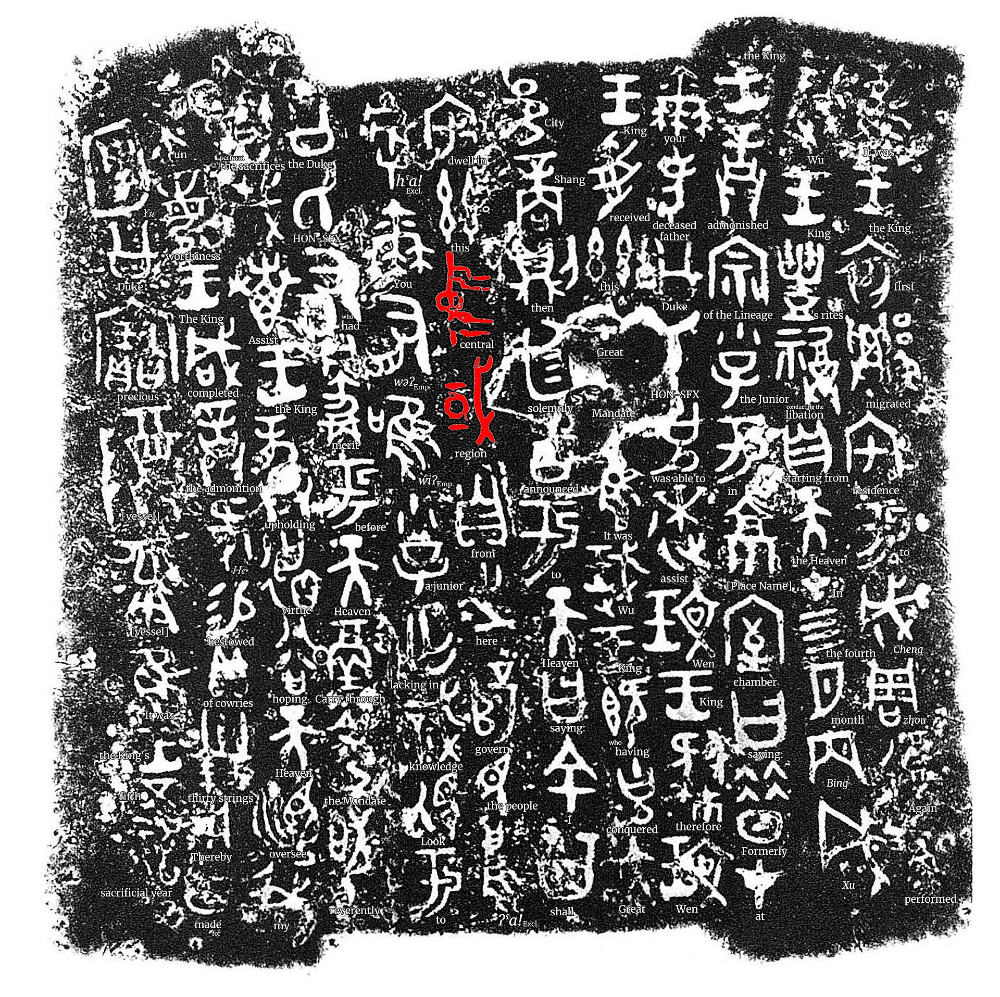
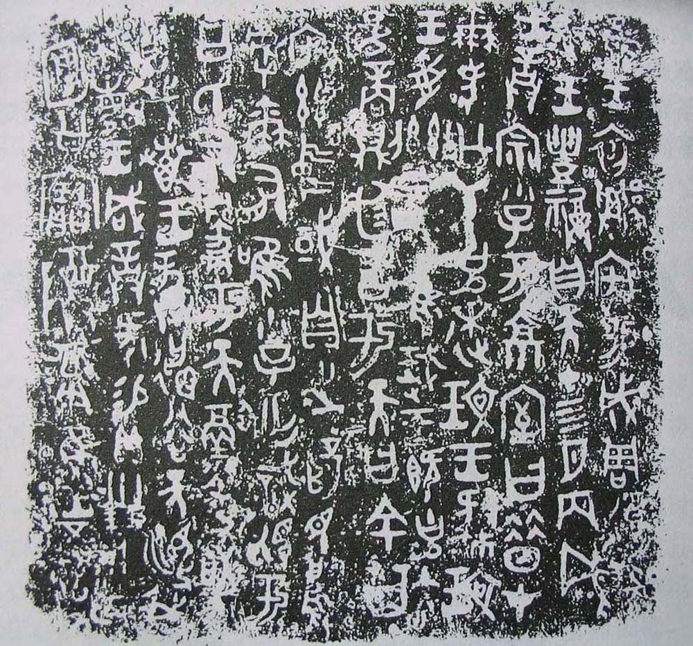

第 19 章
被发明的国宝
“敦煌者，吾国学术之伤心史也。”
当观众追问‘这段痕迹从何而来’时，答案指向另一段叙事，其中一个关键概念是“国宝”。这个在20世纪被发明的词汇，根植于“中国”一词悠久的历史意涵。西周初年何尊铭文中已见“余其宅兹中国”，指代中原地区；《尚书·梓材》亦载“皇天既付中国民越厥疆土于先王”，此处的“中国”是居天下之中的邦国。但古代“中国”主要是一个文化地理概念，与现代民族国家语境下的“国宝”仍有距离。正是后者，在民族危机与知识转型中被建构出来。


陈寅恪这句话写于1930年，为陈垣所编《敦煌劫余录》作的序言里。此后大半个世纪，它被反复引用、刻碑、录入课本，几乎成了中国人谈论流失文物的标准起句。
但引用的热情往往淹没了原文的语境——陈寅恪写下“伤心”时，痛惜的首先是学术主导权的旁落，而非文物的物理位移。他在同一篇序里说得清楚：敦煌所出皆是吾国学术重要材料，发现之后即流散于外国，整理研究亦由外国学者任之。他伤心的，是中国学者没能在第一时间占有这批材料，是“敦煌在中国，敦煌学在国外”的格局已经隐约成形。这个微妙的侧重，在后来者的复述中被逐渐抹平。
“伤心史”三个字脱离了原有的学术语境，进入了一个更宏大也更模糊的情感场域——它成了民族创伤的代名词，成了“国宝流失”叙事的情感基座。而陈寅恪原文中那个冷静的、关于学术能力与知识主导权的判断，反而少有人提了。这种选择性记忆本身，就是“国宝”概念形成史的一个精确注脚。1909年秋，伯希和携带部分敦煌写本途经北京，在六国饭店向中国学者展示。
罗振玉、王国维、董康等人前往观看。当时的记录里，没有出现“国宝”二字。罗振玉事后撰文，用的是“石室遗书”、“古写本”、“秘籍”。他的笔调是兴奋的——一个巨大的新材料库突然敞开了门。他详细列举经卷的种类与数量，与传世文献比对，指出若干佚经的学术价值。
文章发表在《东方杂志》上，标题是《敦煌石室书目及其发现之原始》，通篇是书目学的语气。那场六国饭店的观看，据在场者后来回忆，气氛安静而专注。伯希和展示写本，中国学者翻阅、抄录、低声讨论。或许有人心头掠过遗憾——这些好东西被一个法国人拿走了——但这种遗憾尚未凝结为政治性的愤怒。
彼时知识界的主流关切，是“能从这些材料里发现什么”，而非“这些材料属于谁”。这与清季中国对“古物”的理解一脉相承。在传统文人的世界里，青铜器、碑刻、书画、善本，首先是赏玩与考据的对象。它们有价值，但价值附着于器物本身的历史信息与审美品质，而非其作为“民族”或“国家”象征物的身份。
一个收藏家可以为一尊商代铜鼎一掷千金，但他不会说这是“国宝”。他会说这是“重器”，是“至宝”，是“神品”。这些词汇指向器物的稀缺性与品质，不涉政治归属。晚清金石学的繁荣印证了这一点。从阮元到吴大澂，从陈介祺到端方，收藏家与学者对古物的热情建立在考据学传统之上。他们研究铭文、考证年代、辨析真伪，将器物视为进入古代历史的入口。
这种态度是学术的，也是审美的，但它并不天然携带民族主义情感。一个收藏家可以同时收藏中国青铜器、日本刀剑和高丽瓷器，他的分类框架是“古董”，不是“国别”。变化在世纪之交开始发生。
动力来自多个方向，彼此缠绕推进。第一个动力，是现代考古学的引入。中国传统金石学虽然发达，但与近代考古学之间存在根本差异。金石学关注器物本身——铭文、形制、年代；考古学关注器物与地层、遗址、环境的整体关系。
当安特生、斯文·赫定等外国学者在中国境内进行考古发掘时，他们带来的不仅是一套技术方法，也是一种全新的文物价值观：一件器物的价值，不仅在于它自身，更在于它所能揭示的关于古代社会的信息。而这种信息，只有在原境中才能完整保存。1921年，安特生在河南渑池仰韶村发现仰韶文化遗址，揭开了中国现代考古学的序幕。
此后，李济、梁思永等第一代中国考古学家开始在本土进行科学发掘。他们的工作重新定义了“文物”的含义——文物不再仅仅是可供把玩的器物，而是“历史的证据”。这个转变至关重要。一旦文物被视为历史的证据，它的流失就不再只是收藏家的损失，而是民族历史记忆的缺失。证据一旦消失，它所指向的那段历史便永远沉默。1928年，中央研究院历史语言研究所成立，下设考古组。
同年，李济主持殷墟发掘。这是中国学术机构第一次独立进行的大规模考古工作。在殷墟，考古学家不仅找到了甲骨，还记录下每片甲骨出土的地层、位置与共存器物。
这种工作方法使每一件出土物都成为一个信息节点，而非孤立的收藏品。当这些信息节点被整体保存时，它们可以重建一个古代社会的图景；当它们被打散、出售、流失时，那些不可见的信息便永久消失了。
这个认知在二十世纪三十年代逐渐成为知识界共识。也正是这个共识，为“国宝”概念的诞生提供了学术基础：如果文物是不可替代的历史证据，那么它的流失就是对民族历史的肢解。这个论证逻辑，在此后半个多世纪中反复出现，成为追索流失文物的核心话语。第二个动力，是民族主义思潮的兴起。二十世纪初，随着民族国家观念的普及，中国知识界开始重新审视“过去”的意义。
在传统帝制时代，历史是王朝的谱系；在民族国家框架下，历史是民族的传记。这个转变意味着，散落在各地的古代遗迹与器物，不再仅仅是“前朝遗物”，而是“民族遗产”。它们被重新想象为一个连续的民族主体的创造物，承载着这个主体的精神与记忆。这个想象过程，在报刊文字中清晰可辨。
1913年，《东方杂志》刊登一篇题为《保存古物论》的文章，文中使用的仍是“古物”一词，但论述逻辑已经变化：作者不再仅仅从学术或审美角度论证保存的必要，而是将其与“国体”、“民德”联系起来。古物的保存状况，被视为衡量一个民族文明程度的标尺。这个论证方式在此后数十年间不断强化。
到1930年代，“国宝”一词开始频繁出现在公共话语中。1935年，故宫博物院赴伦敦参加“中国艺术国际展览会”，展出文物七百余件。这是中国文物第一次大规模以国家名义在海外展出。随行的中国学者在报道中反复使用“国宝”一词，强调这些器物“代表中国艺术之最高成就”、“为中华民族文化之结晶”。这个修辞策略，将文物从学术研究的对象转化为民族荣耀的载体。这次展览本身就是一个复杂的政治事件。
它发生在日本侵占东北、华北危急的背景下。国民政府选择在这个时刻将大批文物运往伦敦展出，既有文化外交的考量，也有将文物安全转移至海外的隐忧。
而“国宝”话语在其中扮演的角色，是将这些器物的命运与国家的命运绑定在一起——保护国宝，就是保护民族文化的命脉；失去国宝，就是民族文化的创伤。第三个动力，是文物流失的现实。如果文物从未大规模流失，“国宝”概念或许不会获得如此强烈的情感强度。
正是那些不断传来的流失消息——敦煌经卷被捆载而去、龙门浮雕被凿下运走、天龙山佛首出现在巴黎拍卖行——使得“国宝”话语天然携带创伤记忆的色彩。1914年，俄国探险家鄂登堡在莫高窟停留数月，不仅掠走大量写本与绢画，还切割了第263窟的多块壁画。消息传回北京，学界震动。
壁画不同于可移动的经卷，它是建筑的一部分，它的切割意味着不可移动文物的破坏。这个事件使“流失”的含义从“转移”扩展为“毁坏”。当文物在原境中被切割、凿下、剥离时，即便它在物理上仍然存在于某个博物馆的库房中，它在文化意义上已经遭受了不可逆的损伤。这种损伤感，在陈寅恪的“伤心史”论述中得到了最凝练的表达。
但陈寅恪的“伤心”指向的是学术上的无力感——中国学者本可以研究这些材料，却因种种原因错失了机会。而后来的“国宝”话语，则更多指向一种政治上的主权诉求——这些文物属于中国，它们的流失是对中国主权的侵犯。从学术的“伤心”到政治的“主权”，这个转变发生在二十世纪中叶，并在世纪末达到高潮。
在“国宝”概念的建构过程中，有一个文本起到了标志性作用，那就是陈垣编纂、陈寅恪作序的《敦煌劫余录》。这部书是京师图书馆所藏敦煌写本的目录。它的编纂本身，就是一次对流失的回应：斯坦因、伯希和带走的是精华，剩下的“劫余”部分需要被仔细清点、编目、研究。书名中的“劫余”二字，已经暗含了创伤叙事——这是一场劫难之后残存的部分。而陈寅恪的序言，则将这种创伤感明确表达出来。
但仔细阅读这篇序言，会发现陈寅恪的立场比后来引用者所理解的要复杂。他列举的“伤心”之处，并非外国人的掠夺行为本身，而是中国学者未能及时整理这些材料。
他痛心的是学术主导权的丧失，而非物质财产的损失。这个区分很重要。因为在后来的“国宝”话语中，文物的物质归属往往被置于首位——“这是中国的”，成为最有力的诉求理由。而陈寅恪关心的，是谁在研究、谁在解释、谁在赋予这些文物以学术意义。
换言之，他关心的不是物理上的“拥有”，而是知识上的“主导”。这个差异恰好揭示了“国宝”概念内在的两种可能路径：一条路径通向民族主义的情感政治，将文物视为不可分割的民族财产；另一条路径通向学术自主性的追求，将文物视为需要被本国学者研究的历史材料。在二十世纪的历史进程中，前一条路径逐渐占据了主导地位。
但后一条路径并未消失，它潜伏在每一次关于流失文物的讨论中，偶尔浮现出来，提醒人们“国宝”话语的复杂性。《敦煌劫余录》的编纂体例也值得注意。陈垣在编目时，采用的是传统的四部分类法，将佛经、道经、摩尼教经等分别归类。这种分类方式体现的是中国传统学术的框架。
而几乎同一时期，斯坦因和伯希和带走的敦煌写本，正在伦敦和巴黎被按照西方文献学的标准重新编目。两种分类体系，代表着两套知识传统。当敦煌写本进入大英博物馆或法国国家图书馆的目录系统时，它们被纳入了一个全球性的文献学框架；当它们留在中国的目录中时，它们仍然是一个自足的、以中国学术传统为参照的知识体系。这是“解释权转手”的又一个例证。
文物的物理位移，伴随着知识分类体系的更替。而这种更替，恰恰是陈寅恪所痛心的“伤心”之处——不是东西被拿走了，而是研究被拿走了。
1935年故宫文物赴伦敦展出，是“国宝”概念制度化的一个关键节点。这次展览的筹备过程充满了政治考量。1934年，英国方面通过外交渠道向中国政府提出借展请求。国民政府经过反复权衡，决定同意。理由是多重的：在国际上展示中国文化的成就，争取英国对中国抗战的同情，以及一个不便明说的考量——将部分最珍贵的文物转移至安全地点。当时华北局势已经紧张，故宫文物此前已经经历了南迁，部分暂存上海。
伦敦展览是这次文物大迁移的延续。展品的选择是一个精心设计的过程。最终确定的七百三十五件展品，涵盖青铜、陶瓷、书画、玉器、织绣等多个门类，时间跨度从商代到清代。
这个选择本身就在建构一个“中国艺术”的叙事：它是一个连续的、一脉相承的传统，有着独特的审美品质与高超的工艺水平。这个叙事与西方博物馆正在建构的“亚洲艺术”叙事形成了微妙的对称——两者都在将文物纳入一个更大的分类框架，只不过一个以“民族”为单位，一个以“区域”为单位。展览在伦敦皇家艺术学院举行，为期十四周，参观人数超过四十万。
英国媒体给予广泛报道，评论中频繁出现“杰作”、“瑰宝”等词汇。中国方面的报道则更强调展览的“国家”意义。《大公报》写道：“此次展览，使西人知我国文物之丰富，艺术之精美，实足为国增光。”这里的“国”字，已经不仅仅是地理或政治意义上的中国，也是一个文化意义上的“国”——一个由这些文物所代表和证明的文明体。展览结束后，文物运回国内。
但“国宝”这个词汇，已经通过这次展览深深嵌入了公共话语。此后，但凡涉及重要文物的保护、迁移或流失，“国宝”二字便成为标准的修辞选择。1937年全面抗战爆发后，故宫文物再次踏上西迁之路。
随行的工作人员在日记和报告中反复使用“国宝”来指称这些箱中的器物。在颠簸的卡车、拥挤的船舱、临时的库房里，“国宝”这个词汇承载着一种近乎神圣的情感——这些器物不仅是值钱的东西，它们是民族精神的寄托，是文明延续的象征。这种情感在战时得到了极大的强化。当国土沦丧、人民流离时，那些被精心保护、辗转千里的文物，成为民族不屈的象征。它们的安危与国家的命运紧密相连。这种绑定在此后数十年间从未松动。
然而，“国宝”概念的建构也伴随着某种压缩。当一件文物被赋予“国宝”身份时，它的其他身份——宗教圣物、艺术品、历史材料、商品——往往被遮蔽。一尊北魏的佛像，在僧侣眼中是礼拜的对象，在艺术史家眼中是风格演变的标本，在古董商眼中是一件值钱的货物。
但在“国宝”话语中，它首先是、甚至仅仅是“民族遗产”。这个单一身份的赋予，既强化了它的政治意义，也简化了它的文化内涵。这种简化在涉及佛教艺术时尤为明显。佛教本身是一种跨国的宗教，它的造像、经典、仪轨从一开始就超越了民族国家的边界。一尊云冈石窟的佛像，既是北魏王朝的政治宣示，也是犍陀罗艺术东传的产物，也是佛教信仰的物质载体。
当它被纳入“国宝”框架时，它的跨国性和宗教性往往被淡化，而它的“中国性”被凸显。这种凸显在政治上有其合理性——它支撑着追索流失文物的合法性论证。
但在学术上，它可能遮蔽了这些文物原本的复杂面貌。二十世纪三十年代，学术界内部已经出现了对这种简化的反思。1934年，梁思成在考察山西古建筑时，特别强调建筑与环境的整体关系。他在笔记中写道，一座佛光寺的价值不仅在于它的木构架，更在于它与周围山水、与寺内塑像、与历代题记共同构成的那个整体。这个“整体”观念后来成为文化遗产保护的核心原则。
但梁思成也意识到，当文物被单独取出、运走、展览时，这个整体便被打破了。无论是流失海外还是进入博物馆，文物都不可避免地经历着“去原境化”。而“国宝”话语在强调文物的民族归属时，有时反而加剧了这种去原境化——它把文物从具体的寺庙、村落、仪式中抽离出来，放入一个抽象的民族叙事中。另一个张力来自文物市场本身。在“国宝”话语中，文物是不可交易的民族财产。
但在现实中，文物市场从未消失。二十世纪上半叶，北京琉璃厂的古董商们仍然在做着青铜器、书画、瓷器的买卖。卢芹斋、山中商会等跨国古董商仍然在将中国文物输往欧美市场。这种现实与“国宝”话语之间存在着尖锐的矛盾：如果文物是“国宝”，它怎么能被标价出售？如果它可以被标价出售，那它还是“国宝”吗？
这个矛盾在涉及海外收藏时变得尤为棘手。当一件流失海外的文物出现在拍卖行时，中国方面的反应往往分为两个层面：一面是舆论的愤怒——“国宝岂容买卖”；
另一面是现实的考量——如果要追回，是通过法律途径还是通过市场回购？法律途径耗时漫长且结果不确定，市场回购则意味着承认文物作为商品的属性。这个两难至今没有解决。
1949年后，“国宝”概念进入了新的阶段。新政权对文物的态度从一开始就带有强烈的政治色彩。1950年，中央人民政府颁布《禁止珍贵文物图书出口暂行办法》，这是中国第一次以法律形式明确禁止文物出口。法令中使用的词汇是“珍贵文物”，但不久之后，“国宝”一词便开始在官方文件中出现。1961年，国务院公布第一批全国重点文物保护单位，共一百八十处。
名单中包括敦煌莫高窟、云冈石窟、龙门石窟等佛教遗迹。这些遗迹被正式纳入国家保护体系，“国宝”的身份得到了制度化的确认。对流失海外文物的态度也发生了变化。在二十世纪五十年代至七十年代，由于冷战格局和外交孤立，追索流失文物并非中国政府的优先议题。
但“国宝”话语在内部宣传中持续强化，那些流失海外的著名文物——敦煌写本、龙门浮雕、天龙山佛首——被反复提及，成为民族创伤的象征。这种叙事在改革开放后迅速进入公共领域，成为媒体报道和公众讨论的常见主题。1980年代以后，随着中国经济实力的增长和国际地位的提升，追索流失文物逐渐成为外交议题之一。
1995年，中国加入国际统一私法协会《关于被盗或非法出口文物的公约》。2002年，中国与意大利签署关于防止盗窃、盗掘和非法进出境文物的双边协定。这些法律工具的出现，标志着“国宝”话语从情感动员转向制度实践。但制度实践面临的问题远比情感动员复杂。国际公约通常不溯及既往，而绝大多数流失海外的中国文物，其出境时间都在公约生效之前。这意味着法律追索的路径极为狭窄。
另一方面，海外博物馆和收藏家们往往以“普世遗产”的话语来对抗“民族遗产”的诉求——他们声称这些文物属于全人类，而非某一个国家。
这种对抗，正是本书此前讨论的“亚洲艺术”框架与“民族遗产”框架之间的冲突。回到“国宝”这个概念本身。它的力量在于能够动员起强大的情感与政治资源。
当一件文物被贴上“国宝”标签时，它便获得了某种神圣性——它的流失是不可接受的，它的回归是不容置疑的。这种神圣性在舆论场上具有强大的号召力。每一次关于流失文物的公开讨论，都可以看到这种号召力的显现：公众的愤怒、媒体的声讨、官方的声明，共同构成一个情感共同体，将文物的命运与民族的尊严紧密绑定。
但它的笨重也正在于此。当“国宝”话语携带着巨大的情感重量进入国际法律战场时，它面对的是一个以条文、证据、程序为核心的冷静框架。在这个框架中，情感不是有效的论据。你需要证明的是所有权、非法性、诉讼时效，而不是“这对我们很重要”。而“国宝”话语所依赖的那些宏大叙事——民族创伤、历史正义、文化连续性——在法律条文的缝隙中，往往找不到落脚之处。
更深层的问题在于，“国宝”话语所赋予文物的单一民族身份，有时会与国际文化遗产保护的理念发生冲突。联合国教科文组织推动的世界遗产体系，强调的是遗产的“突出普遍价值”——它们属于全人类，而不仅仅是所在国。
这个理念与“国宝”话语中的民族专属逻辑形成了微妙的张力。当中国积极申报世界遗产、参与国际文化遗产合作时，这两种逻辑之间的协调成为一个需要不断处理的议题。2010年代以后，一个值得注意的现象是，“国宝”话语开始出现内部的裂变。一些学者和评论者开始反思，将流失文物一概称为“国宝”并诉求其回归，是否可能遮蔽了这些文物本身更复杂的历史。
一尊在二十世纪初被切割运往海外的佛像，它的流失固然是暴力的结果，但它在海外博物馆中的百年陈列，也构成了它自身历史的一部分。当它被简单地定义为“我们的国宝”时，这段海外经历便被置于叙事的边缘——它只是一段需要被纠正的错误，而非文物生命史中一个值得认真对待的章节。这种反思与本书前一章讨论的修复伦理转向形成了呼应。
当西方博物馆开始保留文物的残缺痕迹、在说明牌上提及流失经历时，它们实际上在承认，这些文物承载着一段不能被简单归入“亚洲艺术”分类的历史。而中国内部的反思，则从另一个方向触及了同样的问题：当“国宝”话语将文物压缩为民族象征时，它是否也简化了这些文物本身的复杂性？2021年，一件流失海外近一个世纪的佛首通过海外华人捐赠回到中国。媒体广泛报道了这一事件，标题中反复出现“国宝回归”的字样。在捐赠仪式上，发言者将这尊佛首的回归描述为“民族文化的胜利”。
但少有人提及的是，这尊佛首在海外期间曾被多次转手、修复、展览。它的颈部有一道明显的接痕——那是当年被凿下时留下的，后来在海外被重新拼接。这道接痕记录着它从石窟到市场、从市场到博物馆、再从博物馆回到中国的完整旅程。当它被纳入“国宝回归”的叙事时，这段旅程被简化为一个“失而复得”的简单故事。
海外华人的捐赠行为，折射着跨越国族的身份与情感。华侨华人（Chinese diasporas）包括华侨与华人：华侨指寄居海外并保留中国国籍的公民，华裔指其后代。中国移民史可上溯两千多年，明清时期虽受海禁限制，但出洋谋生者未绝。鸦片战争后移民规模扩大，到1949年中华人民共和国成立时，移居国外的中国人已逾1300万。这一庞大的离散群体，在20世纪以多种方式参与了“国宝”叙事的构建与实践。
而那道接痕所承载的复杂历史——二十世纪的文物市场网络、跨国古董商的运作、西方博物馆的收藏逻辑——则被轻轻地略过了。这正是“国宝”概念的深层困境。它赋予文物以强大的情感力量，但这种力量的代价是叙事的简化。当一件文物被定义为“国宝”时，它的故事便已经被预设了结局：它属于中国，它应该回来。而那些无法被这个结局收编的问题——它是如何离开的？
谁从中获利？它在海外经历了什么？它的宗教功能如何被消解？它的艺术价值如何被重新评估？——这些问题的答案指向的是一个比“失而复得”复杂得多的历史过程。陈寅恪在《敦煌劫余录》序言的结尾写下了一段话：“今后斯录既出，国人获兹凭借，宜益能取用材料以研求问题，勉作敦煌学之预流。
庶几内可以不负此历劫仅存之国宝，外可以襄进世界之学术。”在这里，“国宝”二字出现了，但陈寅恪使用的语境是学术研究而非政治宣示。他期待的是中国学者能够利用这些“劫余”的材料，做出有世界水平的学问。这个期待在近一个世纪后的今天仍然悬在空中。
而在它旁边，另一个更响亮的声音早已占据了公共空间——那个声音将“国宝”二字念得铿锵有力，将流失文物的回归视为民族复兴的必然章节。两种声音之间的张力，构成了此后所有追索与返还讨论的基本背景。当“国宝”话语携带着巨大的情感重量进入国际法律战场时，它将要面对的，是一个对情感并不友好的规则体系。而在那个规则体系的缝隙中，陈寅恪式的冷静追问——谁在研究？谁在解释？——仍然没有失去意义。